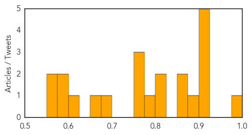

Ebola
30-Day Web Trend
0 alerts, 9 warnings

30-Day Twitter Trend
Article Locations

Article Confidences

Top Articles:
- 1.000
- CDC Ebola expert tells Tucson audience they're making headway ag
- 1.000
- Local agencies take precautionary measures for Ebola
- 1.000
- Liberia to end Ebola state of emergency Republican American
- 1.000
- doing the math
- 1.000
- Ebola outbreak: Drug banned in US given to British soldiers fighting the virus in West Africa
- 1.000
- Doctors Successfully Give Kidney Dialysis to Ebola Patient in the US
- 1.000
- Ebola death toll rises to 5,177
- 1.000
- Ebola-infected doctor from Sierra Leone arrives in US
- 1.000
- Ebola outbreak: Doctor arrives in Nebraska
- 1.000
- Surgeon with Ebola arrives in US for treatment
- 1.000
- Doctor infected with Ebola flown to US
- 1.000
- Congo Free of Ebola, Danger of Virus Remains
- 1.000
- Ebola-infected Sierra Leone doctor 'extremely ill' in US
- 1.000
- New Details About Ebola In Dallas Revealed In CDC Report
- 1.000
- Farsnews
- 1.000
- Ebola outbreak: Doctor arrives in Nebraska
- 1.000
- Mali Already Has An Ebola Cluster: Can The Virus Be Stopped?
- 1.000
- Congo says its separate Ebola outbreak is over
- 0.999
- Philippine soldier under tight watch for showing Ebola-like symptoms, Others news, Health News, AsiaOne YourHealth
- 0.999
- 'Critically ill' Sierra Leone surgeon flown to US for Ebola treatment
- 0.999
- Congo declares its Ebola outbreak over
- 0.999
- Ebola: Sierra Leone doctor arrives in US
- 0.999
- Ebola-infected Sierra Leone doctor gets treated in US
- 0.999
- Doctor who contracted Ebola in Sierra Leone arrives in Nebraska for treatment
- 0.999
- Senegal partially reopens borders with Ebola-hit states
- 0.999
- Mali toughens anti-Ebola border checks
- 0.999
- Senegal Partially Reopens Borders with Worst-Hit Ebola States — Naharnet
- 0.999
- Latest US Ebola patient dies
- 0.999
- DR Congo declares itself Ebola-free
- 0.999
- Sierra Leone doctor with Ebola evacuated to U.S.
- 0.999
- Ebola-infected doctor from Sierra Leone arrives in US
- 0.999
- Dallas County monitoring another traveler for Ebola after return from West Africa
- 0.999
- A look at Ebola treatment in the US by numbers
- 0.999
- DR Congo declares itself Ebola-free
- 0.999
- Surgeon with Ebola in Omaha for treatment
- 0.999
- Ebola cases plummet in Liberian hot spot as aid groups gain trust
- 0.999
- Ebola death toll tops 5000; Mali quarantines 90
- 0.999
- World View: Ebola Cluster Growing in Mali, Hundreds Possibly Exposed
- 0.999
- DR Congo declares itself Ebola-free
- 0.999
- Readiness a key to containing Ebola, doctor says
- 0.999
- Nebraska Medical Center Says Ebola-Infected US Doctor 'Critically Ill'
- 0.999
- Chinese Medical Workers Arrive in Liberia to Help Fight Ebola Virus
- 0.999
- A look at Ebola treatment in the US by numbers
- 0.999
- A look at Ebola treatment in the U.S. by the numbers
- 0.999
- Senegal partially reopens borders with worst-hit Ebola states
- 0.999
- Ebola Strikes Mali Just as Vaccination Effort Gets Under Way
- 0.999
- A look at Ebola treatment in the US by numbers
- 0.999
- Ebola Virus Infected Physician Arrives in U.S. Today From Sierra Leone
- 0.999
- China sends medics & experts to West Africa
- 0.999
- Ebola-infected doctor from Sierra Leone arrives in US
Showing top 50 articles...
Top Tweets:
- 0.955
- RT: Ebola update: 3 confirmed cases in Mali 4 deaths. Weekly incidence rising in Sierra Leone and declining in Liberia http://t.…
- 0.799
- RT: 1000+ new Ebola cases in Sierra Leone in last 3 wks & @UNMEER says SL has just ~15% of beds needed. Up to world to en…
- 0.749
- RT: L'imam de Kouroumalé a contaminé au moins 5 pers : un infirmier un médecin son fils et son logeur Mali Ebola
- 0.691
- RT: Distribution of Ebola cases 21d & totals Guinea Liberia Mali & Sierra Leone WHO SitRep 14NOV http://t.co/cyY8WrApE1
- 0.629
- So what is different between Liberia and Sierra Leone in terms of Ebola control? At the peak in Liberia there were beds for ~18% of... 1/n
- 0.615
- RT: Ebolajournalistiken riskerar förvärra afropessimismen till renodlad afrofobi Ebola africastopebola http:/…
- 0.547
- RT: West African artists release a song about Ebola BandAid30 AfricaStopEbola DoTheyKnowThereAreAfricanMusiciansAtAll https:/…
- 0.531
- RT: Liberia needs "long-term investment to build up health systems to prevent outbreaks [like Ebola] from happening" http…
Unknown
30-Day Web Trend
1 alerts, 0 warnings

30-Day Twitter Trend
1 alerts, 0 warnings

Article Locations


Article Confidences
Top Articles:
- 0.979
- More than 300,000 in US infected with ‘kissing bug’ disease
- 0.917
- Chicago Tribune
- 0.917
- Chicago Tribune
- 0.917
- Chicago Tribune
- 0.917
- Chicago Tribune
- 0.907
- Unexplained, polio-like illness has paralyzed 75 kids
- 0.888
- Tope Elementary closed because of fast spreading stomach virus
- 0.866
- Russia won't demand early repayment of $3 bln lent to Ukraine
- 0.866
- Islamic state militants withdraw from area around Iraq refinery
- 0.819
- Hillgrove High students to be retested for TB
- 0.811
- Scientists celebrate 'major milestone' towards global eradication of polio
- 0.776
- 4,600 people suffering from AIDS in city: Expert
- 0.773
- Improper Contact Lens Use Causes Millions of Eye Infections: CDC
- 0.768
- Pakistanis may face polio screening, warns WHO
- 0.766
- Are the health risks of keeping exotic pets increasing?
- 0.681
- UN Denies Using Kenyan Vaccination Program for Population Control
- 0.657
- WHO extends travel restrictions for 90 days
- 0.601
- Few Texas hospitals lose funding after ‘immediate jeopardy’
- 0.589
- HIV Possibly Contracted From Manicure
- 0.577
- Bouygues un peu plus optimiste pour 2014, CA +1% au T3
- 0.562
- East Asia Summit adopts unprecedented regional malaria goal
- 0.555
- Suspected norovirus outbreak hits 80 at elementary school
Top Tweets:
-
No tweets found for Nov 15, 2014